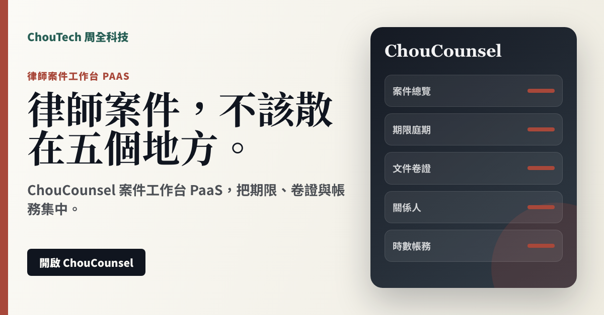

管理案件、任務、期限、庭期、活動紀錄與狀態。
律師案件工作台 PaaS
給律師與律所的案件工作台
ChouCounsel 是 ChouLegal 旗下給律師、律所與法務團隊使用的案件工作台 PaaS。它先把案件管理、期限、文件、關係人、時數、帳務與可匯出的工作底稿集中起來，作為律師日常工作的操作介面。
目前是可操作的本機工作台 MVP；尚未宣稱具備正式雲端多租戶、登入權限、伺服器端資料庫或資安稽核。
Sales Positioning
可銷售方向：律師個人版、律所團隊版、媒合事件包承接、法務案件工作區。
案件、期限、卷證、關係人、時數與帳務，集中在一個律師工作區。
客戶現在的痛點
- 案件資料分散在通訊軟體、雲端硬碟與行事曆
- 期限與庭期靠人記，容易漏掉
- 時數、帳務、工作底稿沒有集中整理
買了之後得到什麼
- 一個工作區看案件、任務與期限
- 匯出 CSV、行事曆與工作底稿
- 把媒合案件承接到律師自己的案件流程
Product Page
產品頁介紹。
集中整理文件、證據、版本與可匯出底稿。
管理時數、帳務、關係人與利益衝突提示。
PaaS Offer
用 PaaS 的方式賣：開通、訂閱、建立工作區。
主軸是產品自助使用；需要客製合作時，也以平台合作、模組或 API 工作區表達。
個人律師案件工作台，適合先用來管理日常案件。
律所團隊版，主打多人協作、權限與案件資料集中。
承接 ChouLegal 律師媒合事件包，形成案件來源到工作台的路徑。
Image Ad
可直接拿去推銷的圖片廣告。
ChouCounsel 案件工作台 PaaS，把期限、卷證與帳務集中。
